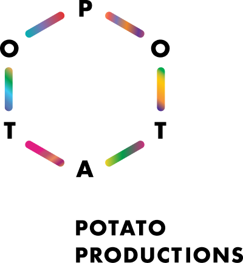

a psycho-spiritual reimagination of Descendants of the Eunuch Admiral (1995) by Kuo Pao Kun
Amidst this constant unease
a dream erupts from my body, hooved
and neighing.

The worker-horse fears the unknown yet dreams persistently of it. It yearns to leave this present insanity to go towards a gaping mystery which, unlike the certainty of the established path, cannot promise comfort, status, and wealth. It wants to leave but cannot tear itself away from the security and pleasure given in exchange for its compliance. Was it forced into obedience? Massaged and coaxed into it through a pleasurable pain? Or did it—does it—choose of its own volition?
The unconscious impulse erupts at a gallop. It overtakes our disciplined, obedient body. Finally, it shows you the pain and horror it feels.
As the first full-length production by zone 境, Descendants is an “attempt to say something which can only be said in mythical form; an attempt to reach a horror which belongs to something so deep within the human psyche that it is outside of subjective experience.” (Robin Mackay)
Descendants was developed from late 2024, with a closed-door work-in-progress sharing in September 2025. The 2025 version was developed with a cast comprising Elle Cheng, Julius Foo, and Ranice Tay. The 2026 full-length show is developed with and performed by Chew Shaw En, Lai Yu Tong, and Neo Hai Bin.
Team
Director / Ang Kia YeePlaywright (Original Text) / Kuo Pao Kun
Scriptwriter / Ang Kia Yee
Co-Producers / Pearlyn Tay, Ang Kia Yee
Research & Dramaturgy Assistant / Ning Poh
Dramaturgy Interlocutor / Charlene Rajendran
Lighting & Set Designer / Ang Kia Yee
Stage Manager / Nicole Tandjung
Marketing Manager / Cheryl Ong
Graphic Designer / Dan
Photographer / Tay Yiling
Ticketing Manager / Pearlyn Tay
Performers / Chew Shaw En, Lai Yu Tong, Neo Hai Bin
Composer / Lai Yu Tong
Biographies
Ang Kia Yee
Kia Yee is a transdisciplinary poet, performance-maker, and slow dream machine who believes in our capacity for compassion, rupture, agency, and change. She is the Co-Founder & was the Company Lead (2020-2024) of Feelers, a research lab of artists and designers focused on the intersections of art and technology. From 2015-2017, she co-founded and co-led theatre collective make/space. She currently co-organizes Opening Acts, a performance initiative for fledgling writers and performers, with Elle Cheng. Her work has spanned poetry, essays, short stories, plays, performances, audio walks, workshops, video, counselling, and astrology readings.
Pearlyn Tay
Pearlyn Tay is an independent producer invested in enabling artistic developmental and creation processes across disciplines and genres. Dedicated to dismantling inherited ways of working, she seeks reconstruction towards intentional and meaningful collaborative spaces for artistic creation. She takes a special interest in the development of emergent practices for artists and producers alongside community- and network-building.
Nicole Tandjung
bio
Ning Poh
bio
Charlene Rajendran
bio
Cheryl Ong
bio
Dan
Dan (Nguyen Cong Danh) is a designer working across visual communication and editorial design. His practice explores how typography and visual systems can shape the way stories, research, and collective memory are read. He is particularly interested in publication as a space for structuring conversations, translating archives, and connecting individual voices into shared narratives.
Tay Yiling
bio
Chew Shaw En
bio
Lai Yu Tong
Lai Yu Tong is a visual artist who works across drawing, image-making, sculpture and sound. His practice works towards creating adequate media to articulate the present, believing in the intrinsic need for humans to make images and tell stories. He publishes music as Cosmologists and books under Thumb Books.
Neo Hai Bin
Neo Hai Bin is a performance maker. He began his theatre debut with Drama Box in 2009. He studied actor’s training practices with SCOT (Summer intensive 2014, Japan) and SITI Company (Summer Workshop 2019, NYC). Some of his physical theatre works are Being:息在 (M1 Fringe Festival 2022), Transit步, Transition移 (Esplanade eXchAnge 2023, 2024), OX (Kaleidoscope.V 2023), maomao (2025).
His literary practice involves research works in social issues and the human condition, culminating into poems, prose, critiques, and short stories. Some of his written plays include 招: When The Cold Wind Blows (Singapore Theatre Festival 2018); Cut Kafka! (Esplanade Huayi Festival Commission 2018); Merdeka / 獨立 /சுதந்திரம் (Wild Rice, with Alfian Sa’at, 2019); Tanah•Air 水•土: A Play In Two Parts (Devised with Drama Box, 2019); Being:息在 (M1 Fringe Festival 2022).
He is part of the theatre reviewers team “劇讀：thea.preter” since 2017. He also co-founded "微.Wei Collective" with lighting designer Liu Yong Huay, creating spatial experiences for participants since 2017.
Supported by


Rehearsal Venue Partner
ITI logo
With thanks to
projector loanerAbout zone 境
a cross-disciplinary performance group started in 2025 which gathers at the borders where language fails, to do the work of expressing the unspeakable and unnameable. By conjuring transient zones where alternative realities and ways of being are possible, we remind ourselves of the possibilities of the impossible. We make theatre that is preoccupied with the symbolic, psychic, and unconscious. Our creative process is intuition-led, and moves beyond the logics of siloed disciplines and traditional narrative structures. We are invested in performances that reverberate beyond intellect and cognition—conveying moods, atmospheres, hunches, suspicions, and desires.